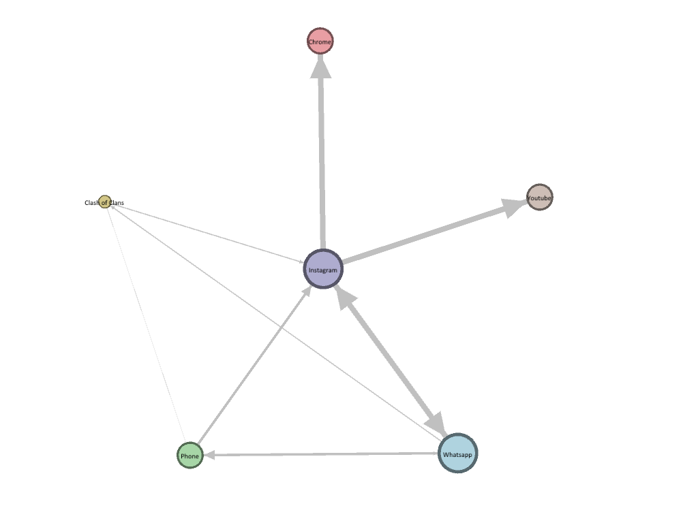

Abstract
Artificial intelligence is rapidly turning into a part of our ordinary lives. People have different views on AI. Some people has a positive view, while some has concerns about it. For example, many people worry about losing their jobs and AI losing control. Despite these issues, many people believe that AI can be used for improvement in healthcare, transportation and education.To gain more information about these complex concepts ,we use well-prepared data with different views from the public. Using this data we can analyze how people view AI ,so that we can understand how AI affect our world.
Tableau Dashboard
Mobile apps have become an essential part of our lives. We use them for everything from staying connected with friends and family to getting work done, shopping, and entertainment. To further understand and analyze these patterns, Explore our interactive Tableau visualization showcasing trends in app usage across different days of the week:

Gephi Visualization
The chart is divided into two parts: the nodes and the edges. The nodes represent the apps, and the edges represent the connections between the apps. The thickness of the edges indicates the strength of the connection.
D3.js Visualization
Visualize screen time distribution throughout the week using our D3.js bar chart:
Explore Our Colab Notebook
Embark on an immersive journey through our project's insights and gain direct access to the dataset. Explore our comprehensive analysis, visualizations, and code implementation in our interactive Colab notebook:
Explore Colab NotebookDive into Our Research Paper
For comprehensive insights into our project methodology and findings please feel free to take a look at this research paper.